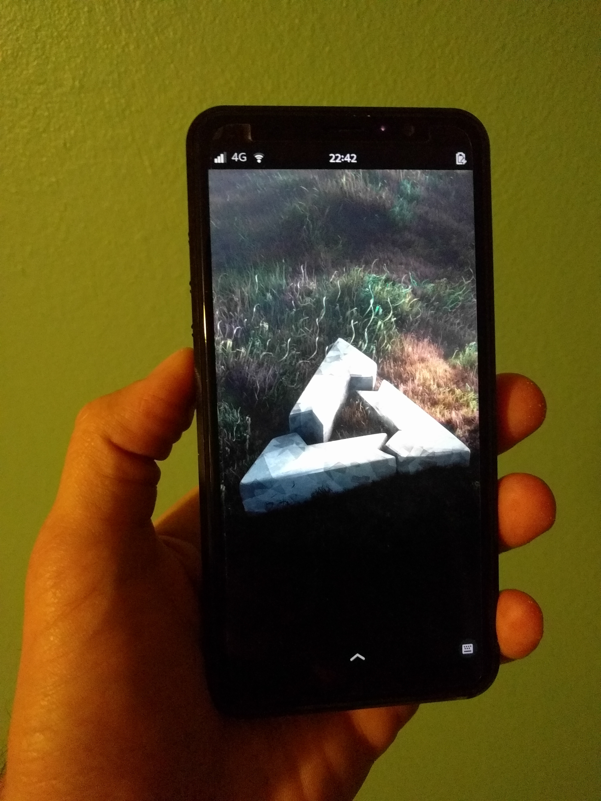

Purism Librem5 (purism-librem5)
|  | |
| Manufacturer | Purism |
|---|---|
| Name | Librem 5 |
| Codename | purism-librem5 |
| Released | 2019 |
| Category | main |
| Original software | PureOS |
| Hardware | |
| Chipset | NXP i.MX8MQ |
| CPU | 4x 1.5 GHz Cortex-A53 |
| GPU | Vivante GC7000Lite |
| Display | 1440x720 |
| Storage | 32 GB eMMC |
| Memory | 3 GB |
| Architecture | aarch64 |
| Type | handset |
| Unixbench Whet/Dhry score | 1381.7 |
{kind=link}
| USB Networking |
Works
|
|---|---|
| Flashing |
Works
|
| Touchscreen |
Works
|
| Display |
Works
|
| WiFi |
Works
|
| FDE |
Works
|
| Mainline |
Works
|
| Battery |
Works
|
| 3D Acceleration |
Works
|
| Audio |
Works
|
| Bluetooth |
Works
|
| Camera |
Works
|
| GPS |
Works
|
| Mobile data |
Works
|
| SMS |
Works
|
| Calls |
Works
|
| USB OTG |
Works
|
| NFC |
Unavailable
|
| Accelerometer |
Works
|
|---|---|
| Magnetometer | |
| Ambient Light | |
| Proximity | |
| Hall Effect | |
| Barometer | |
| Power Sensor | |
| Camera Flash | |
|---|---|
| Keyboard |
Unavailable
|
| Touchpad |
Unavailable
|
| USB-A |
Unavailable
|
| HDMI/DP |
Unavailable
|
| Ir TX |
Unavailable
|
| Ir RX | |
| Stylus | |
| Haptics | |
| Ethernet | |
| FOSS bootloader | |
Contributors
Users owning this device
- Aleksander (Notes: WWAN stack tinkering)
- Craftyguy (Notes: Dogwood and Evergreen (daily driver))
- Ecloud
- Linmob (Notes: PureOS, postmarketOS on microSDXC)
- Newbyte (Notes: thanks bart)
- PanzerSajt
- QC8086
- Roboe (Notes: Evergreen batch, upgraded later with a SparkLAN Wi-Fi/Bluetooth module; working HDMI-enabled docking station available; running pmOS stable)
Installation
Use pmbootstrap to build your own image.
$ pmbootstrap init # vendor: purism, device: librem5
$ pmbootstrap install --fde # using --fde for full disk encryption
Place the device into #Flash Mode, then flash it with:
$ pmbootstrap flasher flash_rootfs
Alternatively you can flash a pre-built image with JumpDrive, but this is more effort.
Flash Mode
To place the Librem 5 info flashing mode, perform the following:
- Ensure that the phone is switched off.
- Turn all Hardware-Kill-Switches off
- Remove battery
- Hold volume-up
- Insert the USB-c cable: (red light blinks, no green light)
- Reinsert the battery: (red light is constantly on, the script will continue)
- Release volume-up
| Some USB-C cables may need to be plugged into the phone with a particular orientation. If the instructions above do not appear to work, try flipping the USB-C end of the cable over and replugging it into the phone. |
These directions were gathered from Purism's documentation, refer to it for additional details/troubleshooting.
OpenPGP Smartcard
Devices shipped after April 2021 already have the OpenPGP smartcard reader firmware flashed. For those devices these instructions should not be necessary. But you still need to check the end of this section on the other tools needed to use the smartcard.
Older Librem 5 phones will need to have the reader firmware upgraded. The firmware can be built from source, but Purism has created a helper script to download/flash the firmware. In order to run this script on Alpine Linux / postmarketOS, these patches should be applied: https://source.puri.sm/angus.ainslie/ttxs-firmware/-/merge_requests/3/diffs
Running the script should result in the following if it is successful:
$ ./scripts/stm_reflash.sh
Connecting to source.puri.sm (178.63.173.204:443)
saving to '/tmp/tmp.FLFPGo/ttxs.bin'
ttxs.bin 100% |*********************************| 9096 0:00:00 ETA
'/tmp/tmp.FLFPGo/ttxs.bin' saved
2a5f7172591d76ae3177b0ccd94f70d67597e4a7 /tmp/tmp.FLFPGo/ttxs.bin
...
Option 2 : 0x00
Device ID : 0x0435 (STM32L43xxx/44xxx)
- RAM : Up to 48KiB (12544b reserved by bootloader)
- Flash : Up to 256KiB (size first sector: 1x2048)
- Option RAM : 16b
- System RAM : 28KiB
Write to memory
Erasing memory
Wrote address 0x08002388 (100.00%) Done.
...
Reboot the phone after upgrading the firmware.
There's a package in the postmarketOS aports repo that enables/installs everything required to use a smartcard on this device: sudo apk add device-purism-librem5-smartcard
Reboot after installing this package for the first time.
For more information, including some examples of how to generate keys and push existing keys to the smart card using gpg, see Purism's Librem Key manual: https://docs.puri.sm/Librem_Key/Getting_Started/User_Manual.html
eMMC Backup / Restore
This section describes one method of backing up the eMMC and restoring that backup. postmarketOS, like many other Linux distros, can work with any number of backup/restore solutions (e.g. rsnapshot, and so on). This particular method uses JumpDrive and ddrescue, and therefore is out-of-band from postmarketOS (or any distro) on the eMMC. An entire copy of the eMMC will be produced, with full disk encryption preserved if it is enabled.
The steps to prepare the Librem 5 are the same for backing up and restoring a disk backup:
- #Download JumpDrive
- Place the device into #Flash Mode
- #Boot JumpDrive
ddrescure is needed on the host PC. See the ddrescue manpage for information on additional parameters you might want to use.
Identify the Librem 5 eMMC disk using lsblk. The following options make it relatively easy to identify the correct disk, but check multiple times that you have the correct drive!
$ lsblk -o name,size,model,vendor |grep JumpDriv
sdb 29.1G e_eMMC JumpDri
Backup
Run ddrescue. Specifying a map file is recommended so that the process can be resumed if it is interrupted.
# ddrescue -v -d -r3 /dev/sdb L5_pmOS_20210210.disk L5_pmOS_20210210.disk.map
...
Restore
| Make sure you have the correct target drive before proceeding. ddrescure will overwrite the drive! You have been warned! |
The backup image can be restored with ddrescue:
# ddrescue -f ~/L5_pmOS_20210210.disk /dev/sdb ddrescue_restore.log
...
U-boot Updates
| WARNING: This process might result in a device that will not boot postmarketOS, make sure you understand how you might recover from this situation before proceeding!! |
Purism is still somewhat actively improving u-boot support on this device, and some components required for booting (DDR training firmware) still see periodic updates. As a result, the u-boot-librem5 package might be upgraded on a device with an existing postmarketOS installation. Package upgrades will not upgrade the u-boot used for booting the device. In order to upgrade the u-boot used for booting the device, the update-u-boot script can be used.
Run with -n to confirm the input file and device are correct:
$ update-u-boot -n
dd if=/usr/share/u-boot/librem5/phone-boot.img of=/dev/mmcblk0 bs=1k seek=2 status=none
sync
Then perform the actual update:
$ sudo update-u-boot
Updating librem5 u-boot in /dev/mmcblk0 in 3 seconds...
Completed successfully.
Known Issues
For an ever-up-to-date list of issues, see issues in gitlab with the device-purism-librem5 label
- The Librem 5 ships with the
megapixelsapp by default, but to use the camera for taking pictures you must manually run$sudo apk add megapixels-purismin a terminal to install a forked version of the application.
- Suspend/resume is not supported on the Librem 5, this is an upstream issue and not specific to postmarketOS.